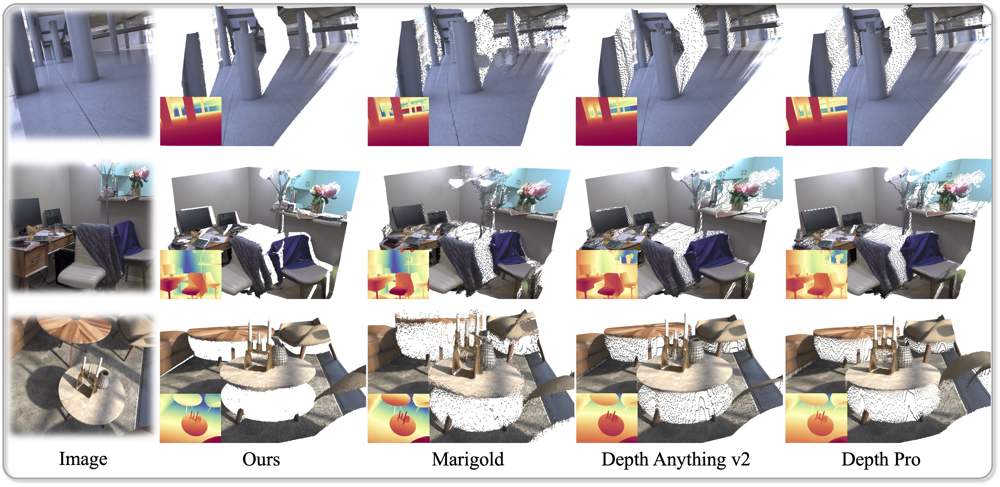

Abstract

This work presents Pixel-Perfect Depth, a monocular depth estimation model based on pixel-space diffusion generation that produces high-quality, flying-pixel-free point clouds from estimated depth maps. Current generative depth estimation models fine-tune Stable Diffusion and achieve impressive performance. However, they require a VAE to compress depth maps into latent space, which inevitably introduces flying pixels at edges and details.
Our model addresses this challenge by directly performing diffusion generation in the pixel space, avoiding VAE-induced artifacts. To tackle the resulting complexity of high-resolution generation, we introduce two novel designs: 1) Semantics-Prompted Diffusion Transformers (DiT) that extracts high-level semantic representations from vision foundation models to guide the diffusion process, enabling accurate modeling of both global image structures and fine-grained details; and 2) Cascade DiT Design that progressively increases the number of patches to further enhance efficiency and accuracy. Our model achieves the best performance among all published generative models across five benchmarks, and significantly outperforms all other models in edge-aware point cloud evaluation.